I am a machine learning researcher working on epistemic uncertainty in modern AI systems: models that quantify what they do not know and act accordingly.
I lead research at Oxford Dynamics on reasoning in foundation models and decision-making under uncertainty. The work targets mission-critical, high-complexity environments, including defence, autonomy, and safety-critical decisioning, where models cannot afford to be confidently wrong, and where knowing when to defer, abstain, or escalate is as important as producing an answer.
Research interests: uncertainty-aware large language models, energy-based models for structured reasoning, random-set and credal representations of belief, ground-threat tracking under epistemic uncertainty, and the foundations of reliable AI.
I completed my PhD in 2025 at Oxford Brookes University under Prof. Fabio Cuzzolin, funded by the European Union H2020 Epistemic AI project, with collaborators at KU Leuven, TU Delft, Samsung AI Cambridge, the University of Pennsylvania, and the University of Manchester, and then spent a year as a postdoctoral research fellow at the university's AIDAS Institute. Earlier, I completed a Master of Engineering (Hons) in Information and Network Security at the University of Limerick and a Bachelor of Engineering in Information Technology at the University of Calicut.
Outside research, I paint.
Contact: shireen.manchingal@oxdynamics.com.
Full list on Google Scholar and OpenReview.
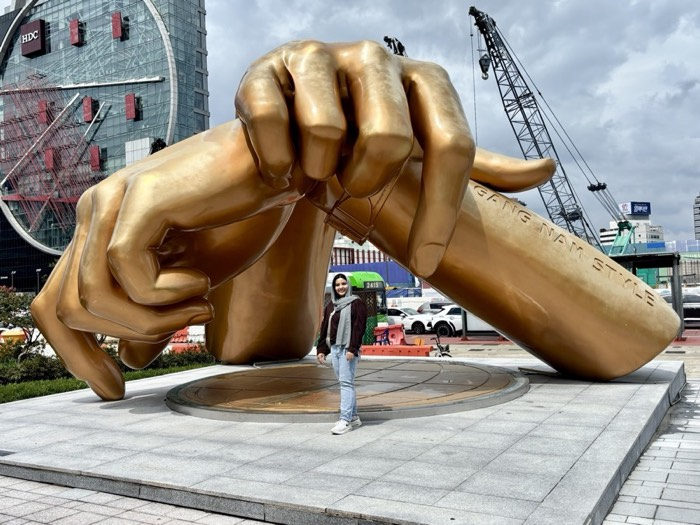
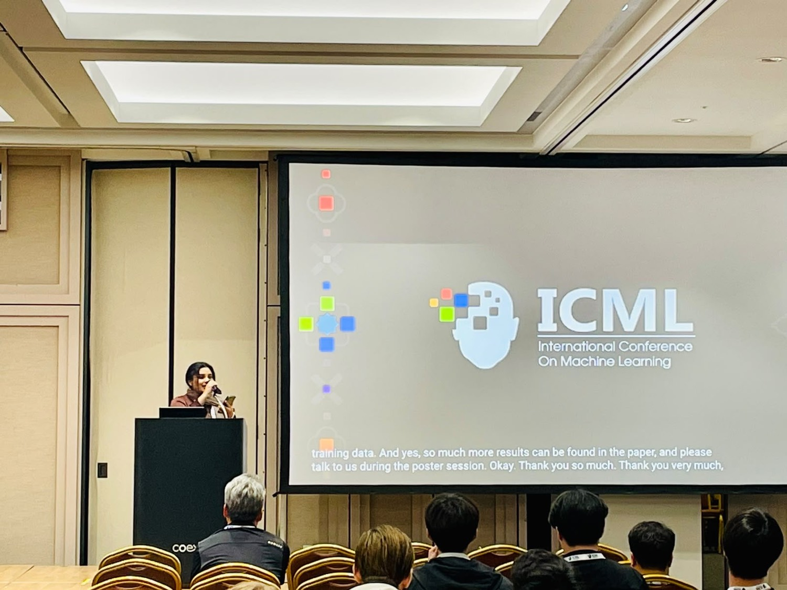
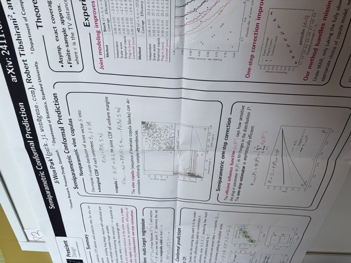
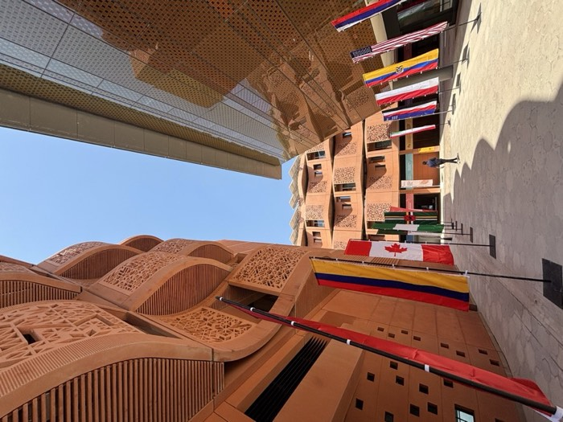
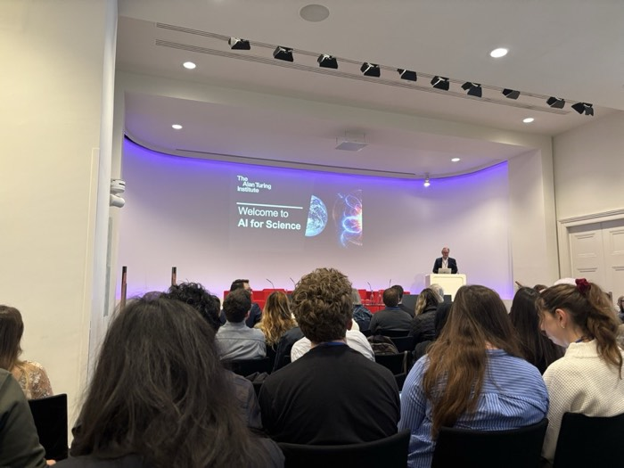
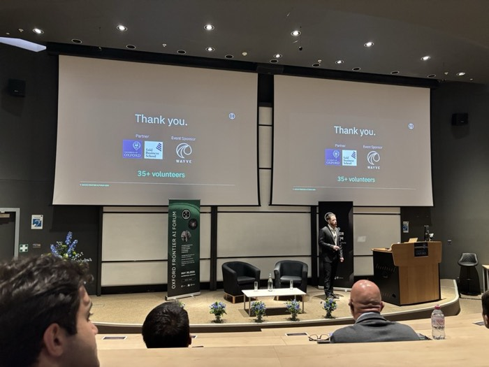
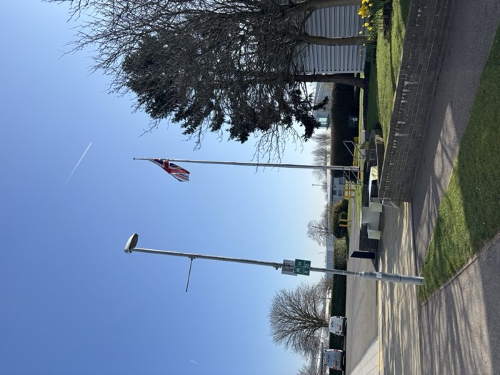
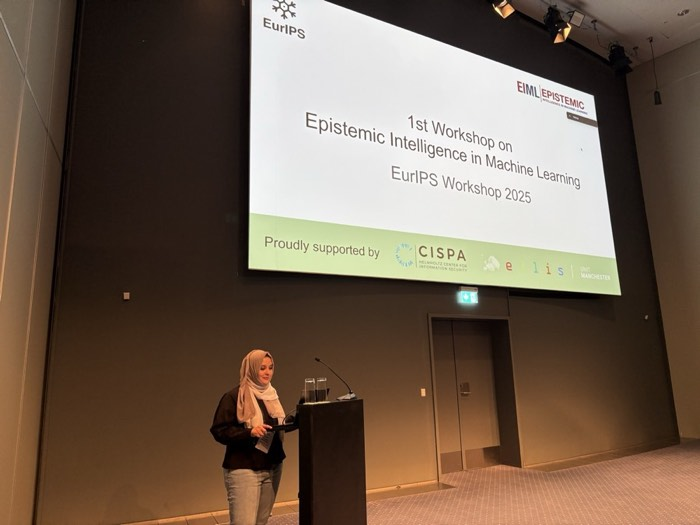
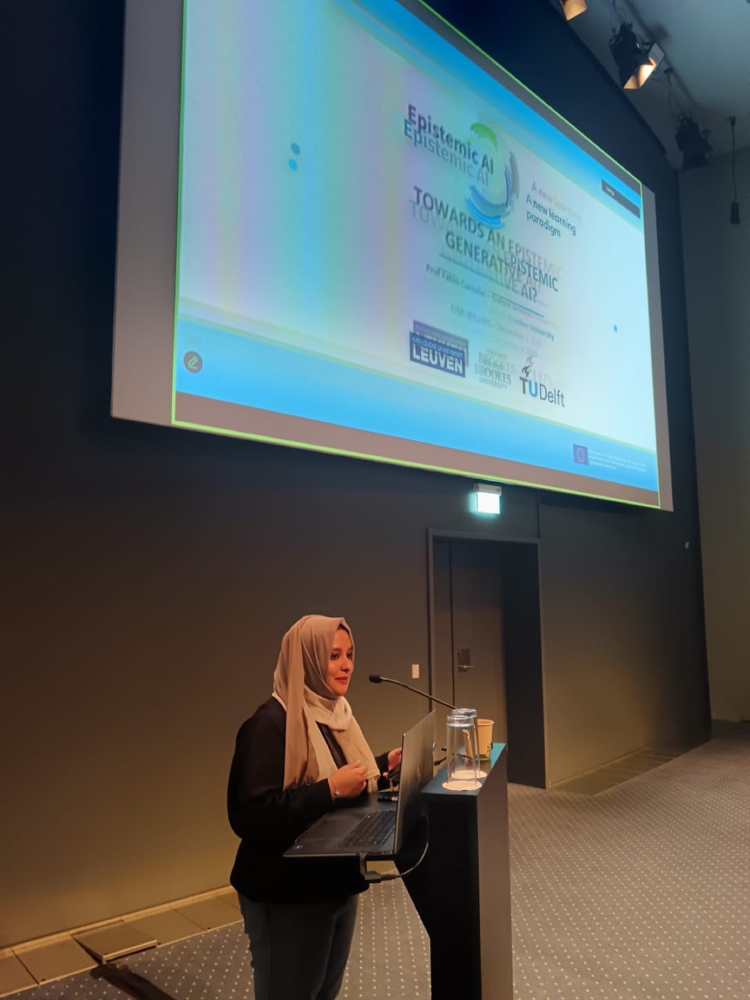
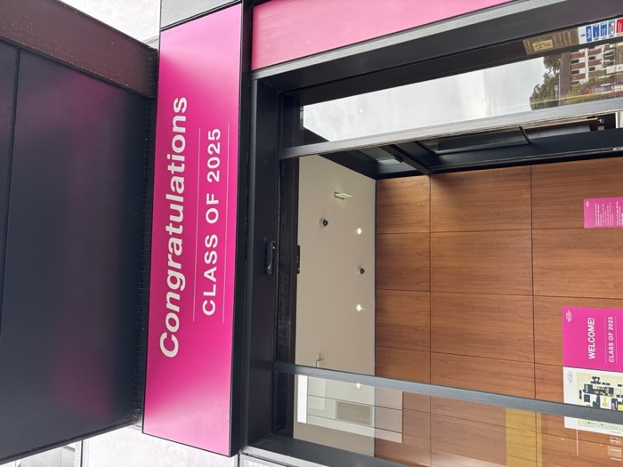
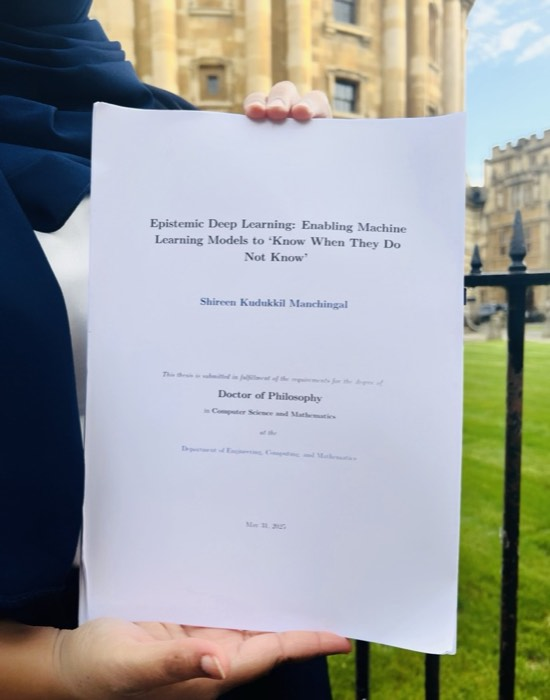
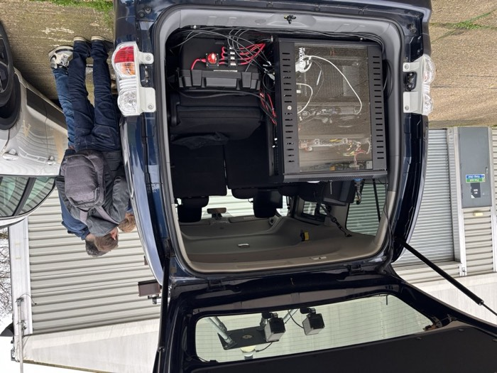
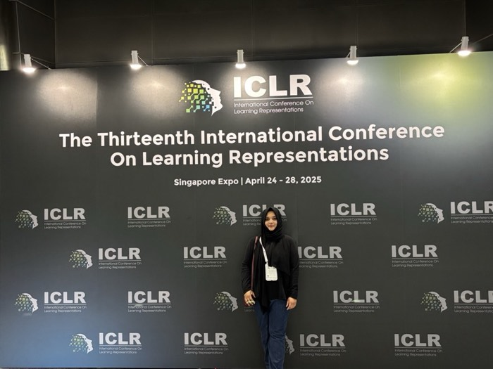
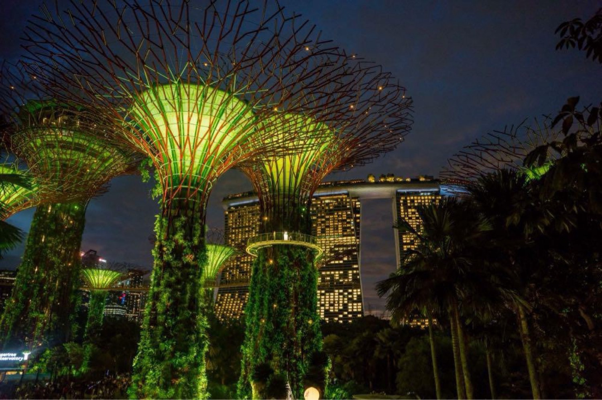
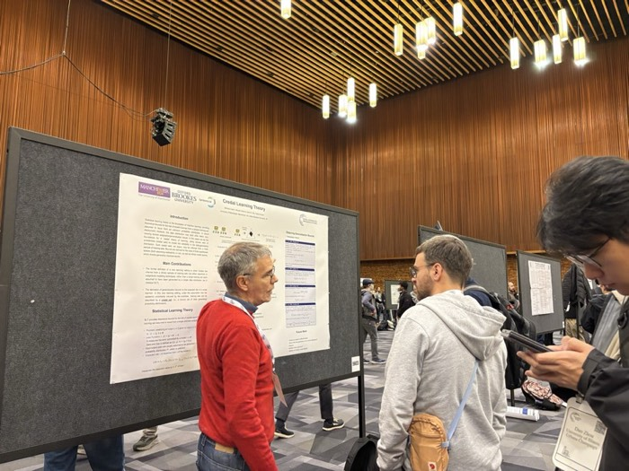